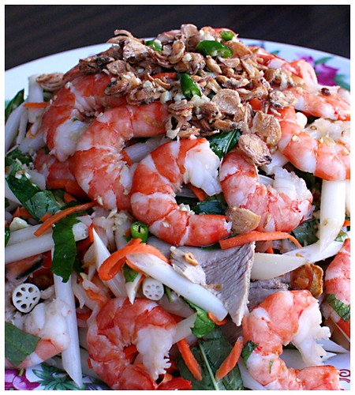
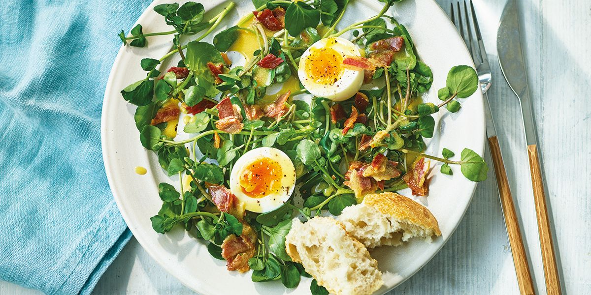
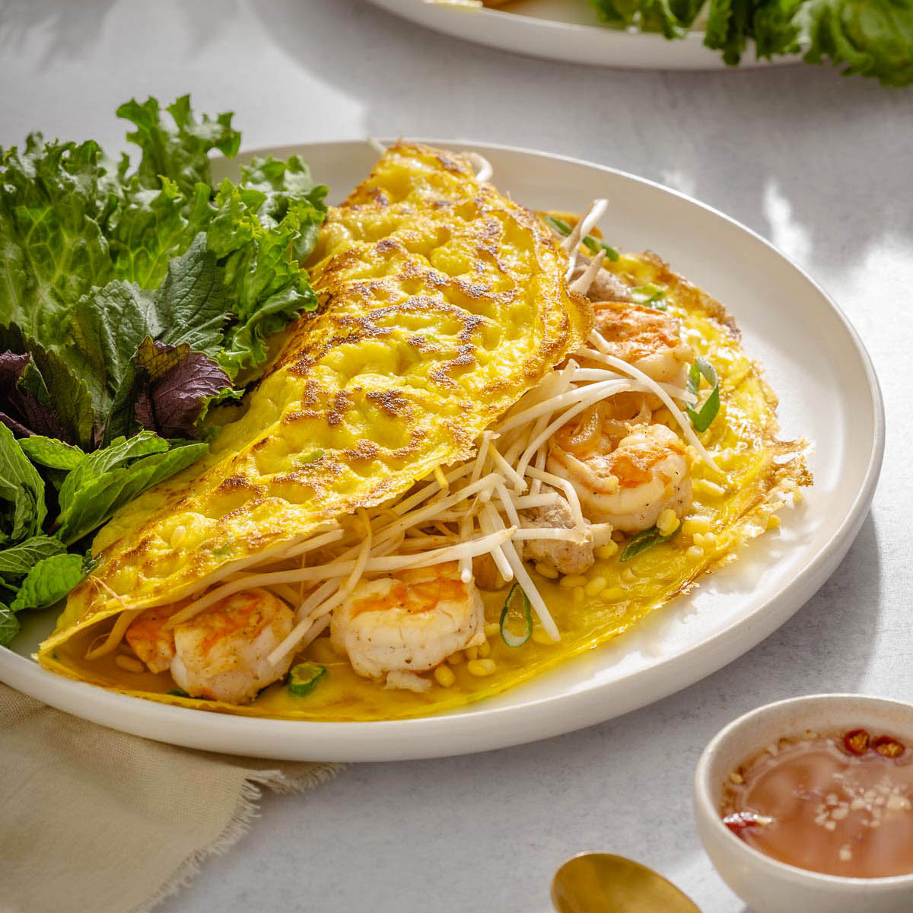

Wet your appetite with some combination of salads and refreshing "goi", or savory sides.
| Dish | Description | Price |
|---|---|---|
| Lotus goi | Lotus root salad, tossed with fish sauce vinaigrette. Served with beef jerky, shrimp, or pork | $20.00 |
| Watercress salad | Fresh watercress tossed in vinaigrette and sprinkled with tiny cubes of fried eggs | $10.00 |
| Vietnamese Crepe | Crispy crepe with bean sprout and prawn fillings, served with delicious fish sauce | $20.00 |
|  |  |  | Lotus goi | Watercress salad | Vietnamese crepe |
Time to dive into the main course. We serve a variety of speciaties from Ha Giang to Ca Mau, covering all regions from north to south.